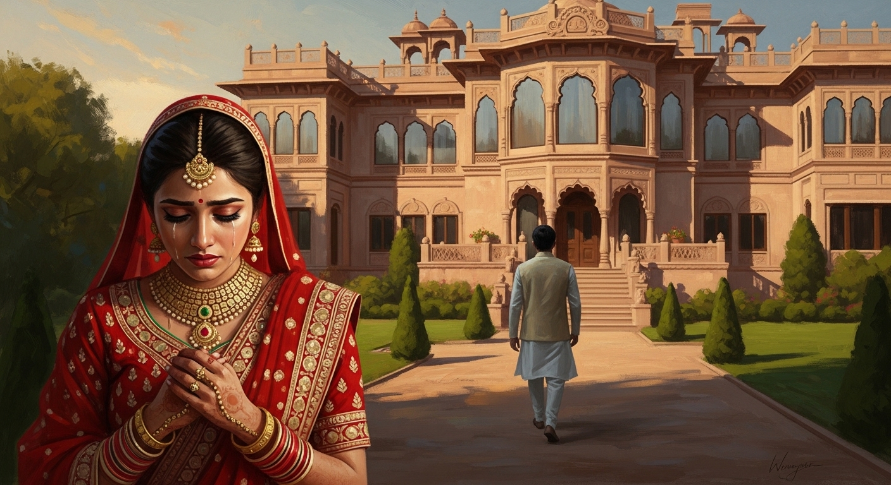

एकांकी का सारांश (Summary):
'बहू की विदा' श्री विनोद रस्तोगी द्वारा लिखित एक अत्यंत मार्मिक और व्यंग्यात्मक (Satirical) एकांकी है, जो
भारतीय समाज की एक बहुत बड़ी बुराई— दहेज प्रथा (Dowry system) पर तीखा प्रहार करती है। इस
एकांकी में दिखाया गया है कि कैसे एक लालची और धनवान ससुर (जीवनलाल) कम दहेज मिलने के कारण अपनी नवविवाहिता
बहू (कमला) को पहले सावन पर उसके मायके (भाई प्रमोद के साथ) विदा करने से साफ़ इनकार कर देता है। अंत में, जब
उसकी अपनी बेटी (गौरी) के साथ भी उसके ससुराल वाले ठीक वैसा ही व्यवहार करते हैं, तो जीवनलाल का घमंड टूटता
है और उसकी आँखें खुल जाती हैं।
1. एकांकीकार का परिचय (Author Introduction)
रचनाकार: विनोद रस्तोगी (Vinod Rastogi)
श्री विनोद रस्तोगी हिंदी के एक जाने-माने और सशक्त एकांकीकार हैं। उन्होंने अपने नाटकों के माध्यम से समाज
में फैली कुरीतियों (Social evils), विशेष रूप से दहेज प्रथा, खोखले आदर्शों और पारिवारिक विघटन पर गहरी चोट
की है। 'बहू की विदा' उनकी सबसे प्रसिद्ध और प्रभावशाली रचनाओं में से एक है। समाज सुधार की भावना इनकी
रचनाओं का मुख्य स्वर है।
2. एकांकी के मुख्य पात्र (Main Characters)
- जीवनलाल (Jeevanlal): एक धनी (अमीर), घमंडी व्यापारी। वह दहेज का बहुत बड़ा लालची है।
वह रिश्तों से ज्यादा पैसे को महत्व देता है (धनलोलुप)।
- राजेश्वरी (Rajeshwari): जीवनलाल की पत्नी। वह एक बहुत ही समझदार, ममतामयी और
न्यायप्रिय महिला है। वह अपने पति के लालच का कड़ा विरोध करती है और अपनी बहू (कमला) को अपनी सगी बेटी
की तरह प्यार करती है।
- रमेश (Ramesh): जीवनलाल का बेटा और कमला का पति।
- कमला (Kamla): जीवनलाल की नवविवाहिता (Newly married) बहू। एक भोली-भाली, दुखियारी
लड़की जो मायके न जा पाने के कारण बहुत दुखी है।
- प्रमोद (Pramod): कमला का भाई। वह अपनी बहन को पहले सावन पर मायके ले जाने आया है,
लेकिन ससुर की दहेज की माँग पूरी न कर पाने के कारण अपमानित महसूस करता है।
3. एकांकी की प्रमुख घटनाएँ (Key Events)
- प्रमोद का आना और अपमान: सावन के महीने में परंपरानुसार प्रमोद अपनी बहन कमला को मायके
विदा कराकर ले जाने के लिए जीवनलाल के घर आता है। परंतु जीवनलाल उसे साफ़ तौर पर 'विदा' देने से मना कर देता
है।
- दहेज की लालसा: जीवनलाल रमेश और कमला की शादी में दिए गए दहेज से असंतुष्ट है। उसका कहना
है कि प्रमोद ने शादी में 'पाँच हज़ार रुपये' का दहेज कम दिया था। जीवनलाल प्रमोद को ताना मारते हुए कहता है
कि "मेरे ज़ख्मों का इलाज केवल पाँच हज़ार रुपये का मरहम है।"
- प्रमोद की विवशता: प्रमोद गिड़गिड़ाता है और अपमान का घूँट पीकर भी किसी तरह पैसे का
इंतज़ाम करके अपनी बहन को ले जाने का निश्चय करता है। परंतु कमला उसे ऐसा करने से रोकती है। कमला की सास,
राजेश्वरी भी प्रमोद को अपना मानती है और उसे पैसे देने की कोशिश करती है ताकि वह जीवनलाल का मुँह बंद कर
सके, लेकिन स्वाभिमानी प्रमोद मना कर देता है।
- गौरी (बेटी) का लौटना और क्लाइमेक्स (Climax): एकांकी के अंत में जीवनलाल की अपनी बेटी
(गौरी) के ससुराल से उनका बेटा रमेश लौटकर आता है। जीवनलाल सोच रहा था कि उसकी बेटी सावन मनाने मायके आएगी।
लेकिन रमेश बताता है कि गौरी के ससुराल वालों ने भी "दहेज कम मिलने का ताना देकर" गौरी की विदाई करने से मना
कर दिया है।
- हृदय परिवर्तन (Moral Realization): जब जीवनलाल को पता चलता है कि जो ज़ुल्म (माँगे) वह
अपने घर की 'बहू' (कमला) पर कर रहा था, ठीक वही ज़ुल्म उसकी 'बेटी' (गौरी) के ससुर भी कर रहे हैं, तो उसका
सारा घमंड और लालच चूर-चूर हो जाता है। उसे अपनी गलती का एहसास होता है—कि बेटी और बहू में कोई अंतर नहीं
होता। अंततः वह कमला की विदाई ख़ुशी-ख़ुशी प्रमोद के साथ कर देता है।
4. महत्वपूर्ण कथन (Important Quotes)
"चोट जब अपने पर लगती है तब पता चलता है।"
= राजेश्वरी का यह कथन जीवनलाल को यह एहसास कराता है कि जब दूसरे की बेटी को दुःख देते हैं तो दर्द महसूस नहीं
होता, पर जब खुद की बेटी के साथ वही होता है, तब आँखें खुलती हैं।
"मरहम की कीमत तो शायद पाँच हज़ार ही है... तो लाओ, मेरा हाथ मेरे ज़ख्मों पर रखो..."
= जीवनलाल बेशर्मी से प्रमोद से पाँच हज़ार रुपये की और माँग करते हुए कहता है।
"पैसे से सज़ा माफ़ नहीं होती, उसका प्रायश्चित करना पड़ता है।"
= एकांकी का यह निष्कर्ष (Conclusion) है।
5. एकांकी का उद्देश्य (Theme)
- दहेज प्रथा का विरोध: दहेज एक सामाजिक अभिशाप है जिसने मानवीय रिश्तों और प्रेम को
'पैसे' के मोलभाव में बदल दिया है।
- बेटी और बहू में समानता (Equality): समाज का यह दोहरा मापदंड (Double standard) कि
'अपनी बेटी प्यारी, लेकिन बहू को सिर्फ दहेज लाने वाली मशीन समझना' अत्यंत निंदनीय है।
- नारी संवेदना (राजेश्वरी का चरित्र): एक महिला (राजेश्वरी) ही दूसरी महिला (कमला) का
दर्द समझ सकती है। एक आदर्श सास का चरित्र प्रस्तुत किया गया है जो अन्याय का विरोध करती है।

6. परीक्षा उपयोगी प्रश्न-उत्तर (Practice Zone)
प्रश्न 1: जीवनलाल ने प्रमोद को उसकी बहन की विदा देने से क्यों मना कर दिया था?
उत्तर: जीवनलाल एक बहुत ही घमंडी और पैसे का लालची (धनलोलुप) व्यक्ति था।
जब प्रमोद अपनी बहन (कमला) को पहले सावन पर मायके ले जाने के लिए विदा माँगने आया, तो जीवनलाल ने साफ़ इंकार
कर दिया। इसका मुख्य कारण यह था कि जीवनलाल के अनुसार प्रमोद ने शादी के समय तय किये गए दहेज से 'पाँच हज़ार
रुपये' कम दिए थे। जीवनलाल ने प्रमोद को अपमानित करते हुए कहा कि जब तक तुम मेरे ज़ख्मों (दहेज की कमी) पर
पूरे पाँच हज़ार रुपये का मरहम नहीं लगाओगे, मैं बहू की विदाई हरगिज़ नहीं करूँगा।
प्रश्न 2: राजेश्वरी के चरित्र की मुख्य विशेषताएँ बताइए। उसने प्रमोद की मदद कैसे करनी चाही?
उत्तर: राजेश्वरी (जीवनलाल की पत्नी) के चरित्र की सबसे बड़ी विशेषता उसका
'न्यायप्रिय', 'ममतामयी', और 'सच्चा' होना है। वह अपने पति के धनलोलुप स्वभाव से पूरी तरह वाकिफ है और उसका
कड़ा विरोध करती है। वह समाज के इस दोहरे चरित्र को नहीं मानती कि 'अपनी बेटी तो प्यारी है, और बहू पराई
है।' वह अपनी बहू कमला से अपनी सगी बेटी की तरह ही प्यार करती है। जब वह देखती है कि प्रमोद अपनी बहन को
विदा न करा पाने के कारण अपमानित महसूस कर रहा है, तो राजेश्वरी अपने पास रखे चाबियों के गुच्छे और रुपये
(पैसे) प्रमोद को थमा देती है, ताकि वह जाकर जीवनलाल के मुँह पर पैसे मार सके और बहन को ले जा सके। यह उसके
क्रांतिकारी और न्यायपूर्ण स्वभाव को दर्शाता है।
प्रश्न 3: एकांकी के अंत में जीवनलाल की आँखें कैसे खुलती हैं? (उसका हृदय परिवर्तन कैसे
हुआ?)
उत्तर: जीवनलाल को अपने धन और रसूख पर बहुत घमंड था और वह दूसरे की बेटी
(कमला) को दहेज के लिए अपनी चौखट पर रुला रहा था। लेकिन उसकी आँखें तब खुलीं जब उसका बेटा रमेश अपनी बहन
गौरी की विदा कराकर बिना गौरी के ही घर लौट आया। रमेश ने बताया कि गौरी के ससुर ने भी "कम दहेज" का ताना
मारते हुए गौरी की विदाई करने से मना कर दिया है। यह सुनकर जीवनलाल को गहरा धक्का लगा। उसे राजेश्वरी की बात
समझ में आ गई कि "चोट जब खुद पर लगती है तो पता चलता है।" जीवनलाल को अपनी गलती का गहरा एहसास (प्रायश्चित)
हुआ कि बेटी और बहू में कोई फर्क नहीं होता। इस सच्चाई के अहसास ने उसका सारा घमंड चूर-चूर कर दिया और अंततः
उसने ख़ुशी-ख़ुशी अपनी बहू कमला को विदा कर दिया।